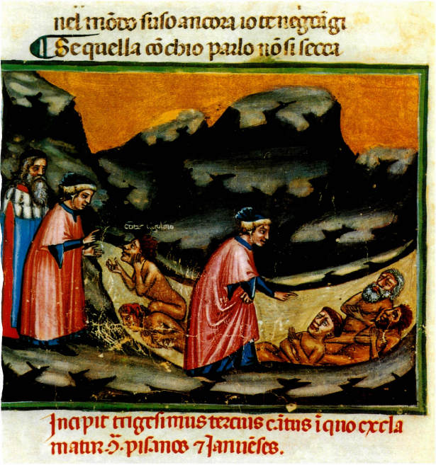
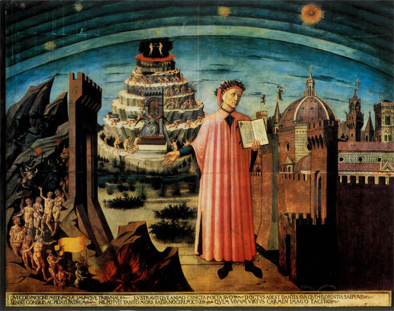
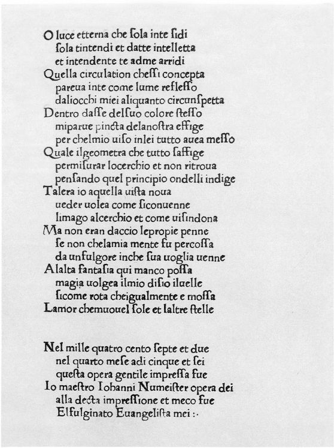
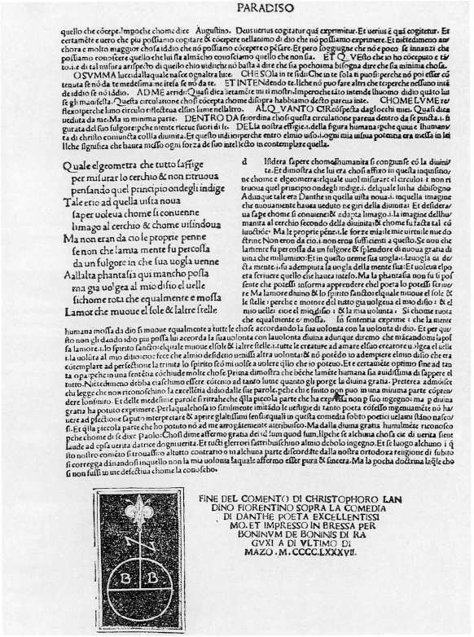
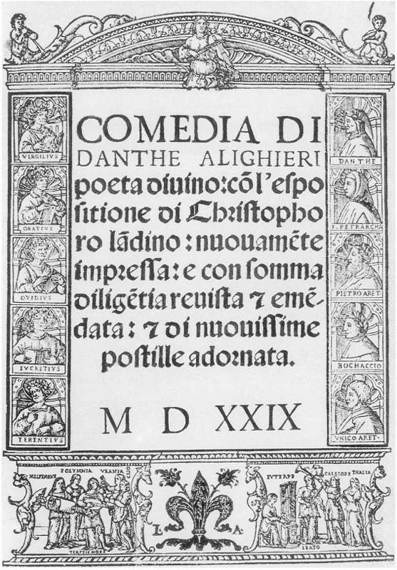
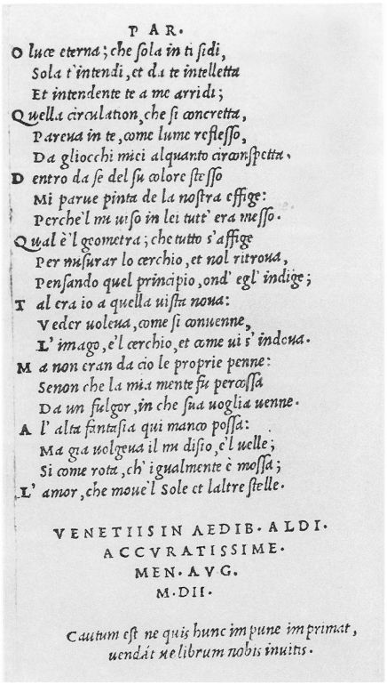

L’incontro di Dante con il conte Ugolino (Inferno, canto XXXIII).
Miniatura di un codice emiliano del sec. XIV
(Roma, Biblioteca Angelica, Ms. 1102).

Dante Alighieri, con la raffigurazione di Firenze e delle tre cantiche della Commedia. Quadro di Domenico di Michelino (1465)
(Firenze, Chiesa di S. Maria del Fiore).

La chiusa della Commedia nell’edizione di Foligno
(Johann Numeister, 1472).

Pagina finale della Commedia nell’edizione di Brescia
(Bonino de Boninis, 1487).

Frontespizio della Commedia con il commento di Cristoforo Landino
(Venezia, Jacopo del Burgofranco, 1529).

L’ultima pagina della Commedia nell’edizione di Aldo Manuzio
(Venezia, 1502).